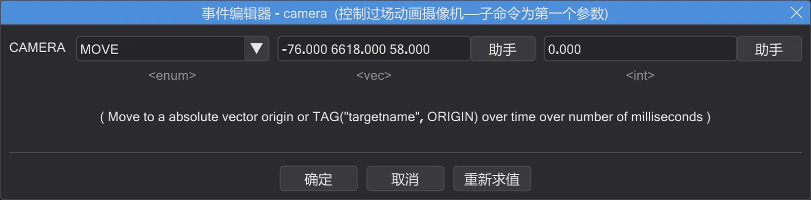

脚本
编写脚本
ICARUS 脚本是一棵命令树。从列表中选取命令,放进正确的块中,再填写参数值。

脚本的结构#
命令从上到下执行。affect ( "名称", FLUSH ) { ... } 把其中的命令发送给某个角色或实体——过场动画就是这样驱动演员的。task 声明一组命令,do 并行启动它,dowait 等待其完成,wait 暂停。if、else、loop 与其他语言相同。只有 affect、task、if、else 和 loop 可以包含命令。
添加命令#
- 在左侧的 事件 列表中双击命令,即可插入到所选行之后(或所选块中)。
- 或者把它拖进树中:松开的位置决定它落在某行之前、之内还是之后。
- 列表末尾的宏一次插入多条命令;折叠宏 将其显示为一行。
- 右键单击某行可在子菜单中使用相同的列表,另有编辑、复制和 查找相似。
事件编辑器#
双击某行(或按 Enter)打开 事件编辑器。顶部是命令的帮助文本,下方每个值都有自己的字段:固定选项的列表、数字和文本字段,文件字段带有 (浏览)和 播放(播放声音或打开脚本)。加载地图后,名称字段旁的箭头可以从地图中选取名称。

- 表达式！ 把字段改为自由表达式;助手 用 Get、Tag 和 Rnd 构建
get ( ... )、tag ( ... )或random ( ... );还原 恢复。 - 不在列表中的值也允许——模组会带来自己的值——但会被标记为未知,因为更常见的情况是拼写错误。
- 确定(Enter)写入数值,取消(Esc)放弃,重新求值 把字段重置为默认值。
选择、移动、复制#
- 单击选择一行,Ctrl+单击追加,Shift+单击选择范围。所有操作都作用于全部选中项。
- 拖动行即可移动。块会连同其内容一起移动;块不能放进自身。
- 复制、剪切、粘贴——粘贴到块中时命令只插入一次,即使块和其中的行是一起复制的。
- 克隆 在正下方插入副本,注释掉 把行变为注释或恢复,删除 删除。
- 撤销和重做记录每一步。右键单击任一按钮可查看完整历史——甚至可以只撤销其中一步而保留之后的所有操作。
查找、替换、书签#
查找(Ctrl+F)打开一个常驻窗口:按命令名(名称为)或按值(包含)搜索,用 F3 / Shift+F3 跳转,可在当前脚本或所有已打开的脚本中替换。书签与 Notepad++ 相同:Ctrl+F2 设置,F2 跳到下一个。书签按文件保存。
修改标记栏#
启用 视图 → 更改历史（边栏） 后,彩色标记栏会标出你修改过的内容:橙色 = 已修改未保存;绿色 = 已修改已保存;蓝色 = 已恢复原样。悬停可查看原始行,右键单击某行 → 恢复为原始,只恢复这一条命令。